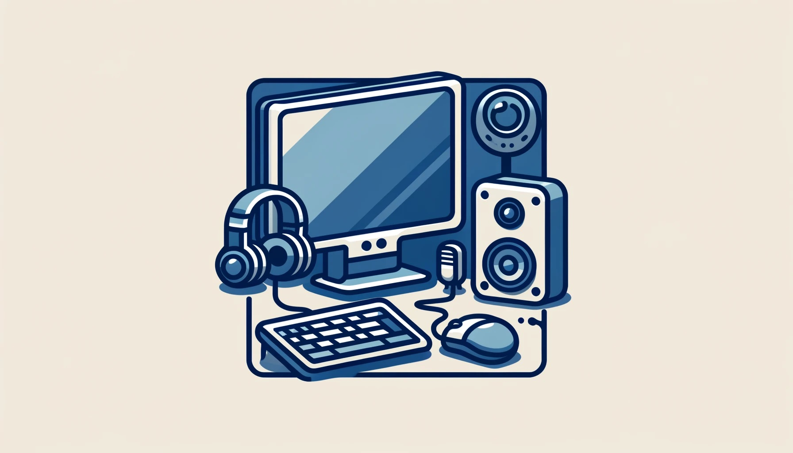

In The Beginning ...
The history of computers starts out about 2000 years ago, with the birth of the abacus. When the beads on the abacus are moved around, according to programming rules memorized by the user, all regular arithmetic problems can be done. In 1671, Gottfried Wilhelm von Leibniz invented a computer that was built in 1694. It could add, and, after changing some things around, multiply. About a century later Thomas of Colmar created the first successful mechanical calculator that could add, subtract, multiply, and divide.
Other Memorable Events ...
- In 1812, Babbage realized that many long calculations were really a series of predictable actions that were constantly repeated. He began to design an automatic mechanical calculating machine, which he called a difference engine.
- Herman Hollerith and James Powers made a step towards automated computing with the development of punched cards. Reading errors were reduced dramatically, workflow increased, and stacks of punched cards could be used as memory of almost unlimited size. For more than 50 years, punched card machines did most of the world's first business computing.
- The start of World War II produced a large need for computer capacity. In 1942, John P. Eckert and John W. Mauchly decided to build a high - speed electronic computer to do the job. Known as ENIAC, this machine could multiply two numbers at a rate of 300 per second.
- Early in the 50's two important engineering discoveries changed the image of the computer field - Magnetic Core Memory and Transistor - Circuit Elements. These technical discoveries quickly found their way into computers. Such computers were mostly found in large computer centers operated by industry, government, and private laboratories.
- In the 1960's, efforts to design and develop the fastest possible computer with the greatest capacity reached a turning point with the Stretch computer by IBM. Stretch was made with the fastest access time, and total capacity in the vicinity of 100,000,000 words.
- Many companies, some new to the computer field, introduced programmable minicomputers supplied with software packages in the 1970’s. The "shrinking" trend continued with the introduction of personal computers (PC's), which are programmable machines small enough and inexpensive enough to be purchased and used by individuals. Many companies, such as Apple Computer and Radio Shack introduced very successful PCs in the 1970’s.
- By the late 1980’s, some personal computers were run by microprocessors that, handling 32 bits of data at a time, could process about 4,000,000 instructions per second.
- Computer networking, e-mail and the Internet, and electronic publishing are just a few of the applications that have grown in recent years. Computers continue to decrease in price, offering the promise that soon, “computers will reside in most homes, offices, and schools”.


Great Computer Quotes ...
 “Men are form Mars, Women are from Venus, Computers are from
Hell.”
“Men are form Mars, Women are from Venus, Computers are from
Hell.”
~Author Unknown
“Give a person a fish and you feed them for a day;
teach that person to use the Internet and they won't bother you for
weeks.”
~Author Unknown
“To err is human, but to really foul things up requires a
computer.”
~Farmer's Almanac, 1972
Personal Computer Peripherals ...
Computer peripherals are devices that connect to a computer to enhance its capabilities or to perform specific functions. These devices can be external or internal and are designed to either input information to the computer or output data processed by the computer.
 Peripherals have played a crucial role in the evolution of personal computing by expanding the capabilities and versatility of computers. Initially, computers were standalone devices with limited functionality. The introduction of peripherals, such as printers, modems, and mice, dramatically enhanced the utility of personal computers, enabling them to connect with other systems, print documents, and navigate graphical interfaces, respectively. This expansion allowed computers to become more interactive and accessible to a broader range of users, facilitating the rise of the personal computer in both professional and home settings. Over time, the development of more advanced peripherals, like webcams and external storage devices, continued to push the boundaries of what personal computers could do, driving innovation and making them central to modern life.
Click the arrow for examples of peripherals
- Keyboard - A device used for typing text and controlling functions on a computer. It is essential for most computer interactions.
- Mouse - A pointing device that allows the user to interact with the computer's user interface, used for navigating and selecting items on the screen.
- Printer - A peripheral that produces a hard copy of documents or images from digital data stored on a computer or other devices.
- Scanner - A device that captures images from photographic prints, posters, magazine pages, and similar sources for computer editing and display.
- Webcam - A small camera that connects to a computer, often used for video conferencing, streaming, or providing real-time video.
- External Hard Drive - A portable storage device used to back up data from the internal hard drive of a computer and transfer files between systems.
- Speakers - Devices that output audio from a computer, allowing the user to listen to music, sounds from software, or audio from videos.
These can be connected through various ports and interfaces, such as USB, HDMI, or Bluetooth, which facilitate communication with the main system.
CSS animations allow you to animate the transition of CSS properties over time, creating visual effects without JavaScript. In this specific use case, a CSS snippet is used to create a scrolling animation for images when they enter a specified viewport range. The images in the "Other Memorable Events..." section with the "imgFade" class start smaller and transparent, then scale up to their original size and become fully visible as they scroll into view. The animation, defined by the "fade-in" keyframes, is triggered based on the element's visibility within a 100 to 500 pixel range in the viewport.